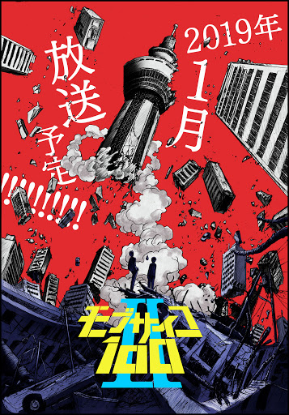
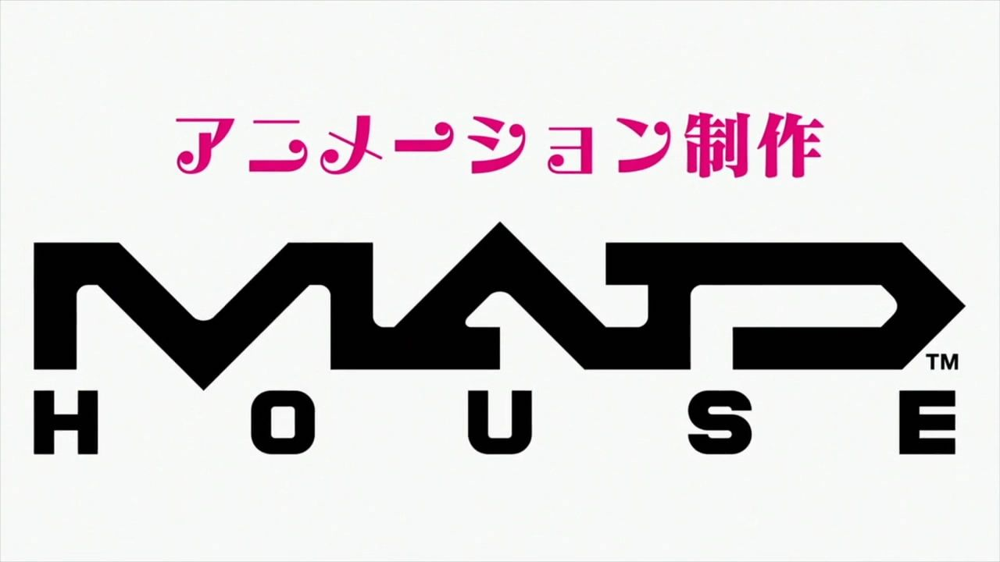
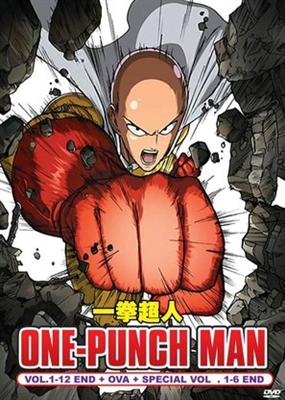
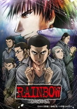

Bones
 Bones Inc (Japanese: 株式会社 ボンズ, Hepburn: Kabushiki-gaisha Bonzu) is a Japanese anime studio. It has produced numerous series, including Noragami, No. 6, Wolf's Rain, Scrapped Princess, Eureka Seven, Angelic Layer, Darker than Black, Soul Eater, Ouran High School Host Club and two adaptations of the Fullmetal Alchemist manga along with Star Driver, Gosick, Mob Psycho 100, Space Dandy, and My Hero Academia. Its headquarters is located in Igusa, Suginami, Tokyo.
Bones Inc (Japanese: 株式会社 ボンズ, Hepburn: Kabushiki-gaisha Bonzu) is a Japanese anime studio. It has produced numerous series, including Noragami, No. 6, Wolf's Rain, Scrapped Princess, Eureka Seven, Angelic Layer, Darker than Black, Soul Eater, Ouran High School Host Club and two adaptations of the Fullmetal Alchemist manga along with Star Driver, Gosick, Mob Psycho 100, Space Dandy, and My Hero Academia. Its headquarters is located in Igusa, Suginami, Tokyo.
| 2016 |
 |
 |
 |
 |
 |
 |
| My Hero Academia |
Bungo Stray Dogs |
Bungo Stray Dogs 2 |
Mob Psycho 100 |
Snow White with the Red Hair |
Concrete Revolutio: Superhuman Phantasmagoria |
| April 3, 2016 - June 26, 2016 |
April 7, 2016 - June 22, 2016 |
October 6, 2016 - December 22, 2016 |
July 12, 2016 - September 27, 2016 |
January 11, 2016 - March 28, 2016 |
April 3, 2016 - June 17, 2016 |
| Kenji Nagasaki |
Takuya Igarashi |
Yuzuru Tachikawa |
Masahiro Andō |
Seiji Mizushima |
| Based on the manga by Kōhei Horikoshi; animated by Bones Studio A and C |
Based on the manga by Kafka Asagiri; animated by Bones Studio D. |
Based on the manga by One; animated by Bones Studio B. |
Sequel to Snow White with the Red Hair; animated by Bones Studio B. |
Sequel to Concrete Revolutio; animated by Bones Studio C. |
| 2017 |
 |
 |
| My Hero Academia 2 |
Blood Blockade Battlefront |
| April 1, 2017 September 30, 2017 |
October 7, 2017 December 23, 2017 |
| Kenji Nagasaki |
Shigehito Takayanagi |
| Sequel to My Hero Academia; animated by Bones Studio C. |
Sequel to Blood Blockade Battlefront; animated by Bones Studio B |
| 2018 |
 |
 |
| My Hero Academia 3 |
Dragon Pilot: Hisone and Masotan |
| April 7, 2018 September 29, 2018 |
April 13, 2018 June 29, 2018 |
| Kenji Nagasaki |
Shinji Higuchi (chief) Hiroshi Kobayashi |
| Season 3 of My Hero Academia; animated by Bones Studio C. |
Original work; animated by Bones Studio A. |
| 2019 |
 |
 |
 |
| My Hero Academia (season 4) |
Bungo Stray Dogs 3 |
Mob Psycho 100 II |
| October 12, 2019 April 4, 2020 |
April 12, 2019 June 28, 2019 |
January 7, 2019 April 1, 2019 |
| Kenji Nagasaki |
Takuya Igarashi |
Yuzuru Tachikawa |
| Season 4 of My Hero Academia; animated by Bones Studio C |
Season 3 of Bungo Stray Dogs; animated by Bones Studio D. |
Sequel to Mob Psycho 100; animated by Bones Studio B.. |
 Madhouse Inc. (Japanese: 株式会社マッドハウス, Hepburn: Kabushiki-gaisha Maddohausu, stylized as MADHOUSE) is a Japanese animation studio founded in 1972 by ex–Mushi Pro animators, including Masao Maruyama, Osamu Dezaki, Rintaro and Yoshiaki Kawajiri.
Madhouse has created and helped to produce many well-known shows, OVAs and films, starting with TV anime series Ace o Nerae! (produced by Tokyo Movie) in 1973, and including:
Wicked City,Ninja Scroll,Perfect Blue,Vampire Hunter D: Bloodlust,Di Gi Charat,Black Lagoon,Death Note,Paprika,Wolf Children,Parasyte: The Maxim and the first season of One-Punch Man. Unlike other studios founded at this time such as AIC and J.C.Staff, their stdength was and is primarily in TV shows and theatdical features. Expanding from the initial Mushi Pro staff, Madhouse recruited important directors such as Morio Asaka, Masayuki Kojima, and Satoshi Kon during the 1990s. Their staff roster expanded in the 2000s to include Mamoru Hosoda, Takeshi Koike, and Mitsuo Iso, as well as many younger television directors. The studio was also responsible for the first Beyblade anime series as well as the Dragon Drive anime and the 2011 anime adaptation of Hunter × Hunter.
| Title |
Poster |
Genre |
Date release |
Episodes |
Director |
Notes |
| One-Punch Man |
 |
Action
Comedy
Superhero |
June 14, 2012 – present |
22 eps |
Shingo Natsume (season 1) |
Based on a manga by Hiromu Arakawa; animated by Bones Studio C. |
| Chikara Sakurai (season 2) |
| Hunter x Hunter
|  |
Adventure
Fantasy
Martial arts
| October 2, 2011 – September 24, 2014
| 148 eps
| Hiroshi Kōjina
| HxH is a Japanese manga series written and illustrated by Yoshihiro Togashi. It has been serialized in Weekly Shōnen Jump since March 1998, although the manga has frequently gone on extended hiatuses since 2006. |
| Rainbow: Nisha Rokubō no Shichinin
|  |
December 5, 2002 – January 4, 2010
| 22 eps
| is a Japanese manga series written by George Abe and illustrated by Masasumi Kakizaki. It was serialized in Shogakukan's Weekly Young Sunday manga magazine from December 2002 to July 2008 |